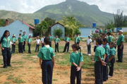
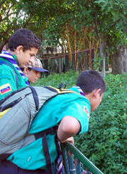

Plan Fomentado Valores Patrocinio directo de un Grupo Scout
Este plan implica un apoyo a uno de nuestro Grupos Scouts, para fortalecer su gestión a nivel logístico, y contempla:
Otorgamiento de “Carta de Agradecimiento”(Tipo
certificado) por el apoyo al Grupo Scout durante el año 2013, junto con
una calcomanía alusiva para colocar en un lugar visible
Así mismo, según lo contemplado en nuestros Reglamentos, son funciones y atribuciones de la Institución Patrocinadora:
a) Facilitar los medios necesarios para el buen funcionamiento del Grupo;
b) Promocionar la participación de adultos para ser seleccionados como dirigentes del Grupo;
c) Nombrar el Representante de la Institución ante el Consejo de Grupo y la Asamblea Distrital;
d) Velar por que el Grupo cumpla con el Registro Anual, ratificando en el mismo su Compromiso de Patrocinio;
e) Promover la realización de la Asamblea Anual de Padres y Representantes;
f) Colaborar en la programación de actividades del Grupo;
Favor emitir cheque a nombre de la Asociación de Scouts de Venezuela. Las Contribuciones a nuestra organización son deducibles del Impuesto Sobre la Renta. Ley del ISLR.